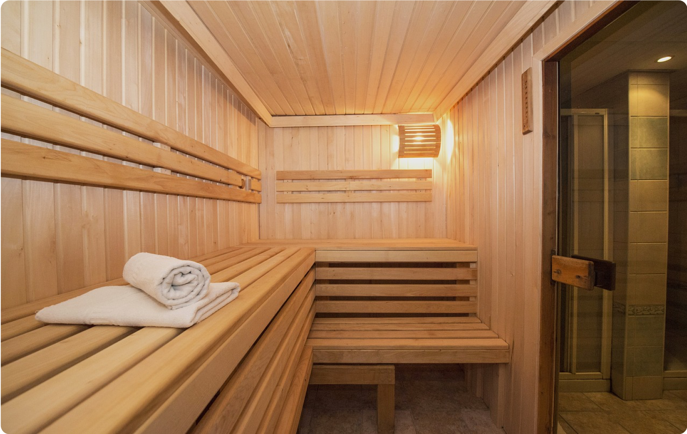

Finnische Sauna
Im gemischten Wellnessbereich steht eine klassische finnische Sauna zur Verfügung. Für unsere Damen gibt es einen separaten Wellnessbereich mit eigener finnischer Sauna.
ENTSPANNUNG
Im KIELS findest du die besten Voraussetzungen vor, um Dich zu entspannen. Besuche unsere Saunen oder das Römische Dampfbad und gönn Dir eine kleine Auszeit.
Im gemischten Wellnessbereich steht eine klassische finnische Sauna zur Verfügung. Für unsere Damen gibt es einen separaten Wellnessbereich mit eigener finnischer Sauna.
Die Damensauna ist direkt mit dem Umkleideraum verbunden und bietet einen eigenen Rückzugsbereich.
Meditative Klänge und Ruhe schaffen den passenden Rahmen, um nach einer intensiven Trainingseinheit mit der Regeneration zu starten.
LOUNGE AREA
Wenn du zwischen Deinen Saunagängen eine kurze Auszeit brauchst, bist du in unserem Loungebereich genau richtig. Nimm Platz und lausche der Musik und den Wasserfällen.
ABKÜHLUNG
Für die perfekte Abkühlung nach der Sauna oder zwischen Deinen Saunagängen sorgen die Schwalldusche und der Eisbrunnen. Die Erlebnisdusche sorgt zusätzlich für Erfrischung.
REGELMÄSSIG JEDEN MONAT
An unserem Sauna-Samstag erwarten dich Specials, klassische und fruchtige Aufgüsse sowie frisches Obst.
Migrationsreferenz: Verfügbarkeit und Termine werden vor Liveschaltung mit dem aktuellen Sanierungs- und Betriebsstatus abgeglichen.

BISTRO & LOUNGE
Zum Wohlfühlen gehört auch das Essen und Trinken. In unserem Bistro & Lounge-Bereich bekommst Du erfrischende Getränke, Kaffee, Proteinshakes und -riegel.